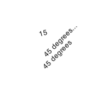

pop
pop()
NodeBox is a so-called state-machine. For example, once rotate(45) is called, all subsequent shapes, paths, text and images are rotated 45 degrees. The rotation state is 45 degrees. The push() and pop() commands allow for a state within a state. All transformations, such as rotate() and skew(), defined between a push() and pop() call last only until pop() is called. Thereafter the previous state is used. For example, a rotate(-30) within a rotate(45) means a rotation state of 15 degrees until pop() is called and the rotation state becomes 45 degrees again.
 |
rotate(45)
text("45 degrees", 50, 80)
push()
rotate(-30)
text("15", 50, 50)
pop()
text("45 degrees...", 50, 60) |